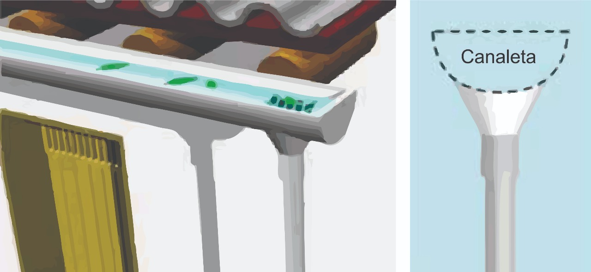
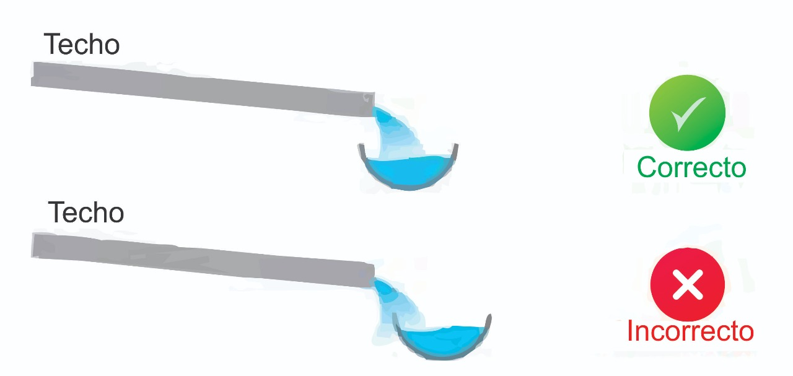
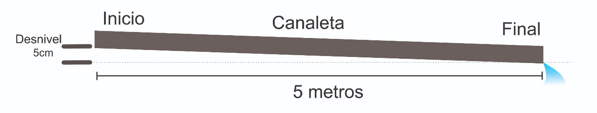

Los materiales necesarios para la construcción del sistema de captación de agua de lluvia dependen del tamaño del área que se utilizará para captarla (techo) y de la cantidad que se espera captar.
<Los extremos de la canaleta deberán estar cerrados para evitar que se salga el agua. La canaleta deberá ser al menos 20 centímetros más larga que el techo que captará el agua en su lado más bajo (pueden ser varias canaletas unidas entre sí, con las uniones selladas con silicón por la parte externa y traslapadas 10 centímetros). Las canaletas deben quedar suficientemente cerca del borde del techo, para evitar que el agua salpique o caiga fuera de la canaleta.
En el extremo de la canaleta que se fijará en la sección más baja del techo se perfora un agujero del tamaño de la boca del embudo. El embudo se corta de forma curva para que embone con la canaleta. Entre la boca del embudo y el agujero se coloca el rectángulo de malla para cernir o la coladera, y se sella el embudo a la canaleta con silicón para evitar fugas de agua. Esta malla se con- vierte en una trampa para sólidos (hojas, troncos, etc.) y también evita que entren animales (ratones y aves, entre otros) a la tubería (Figura 1).
Las canaletas deberán estar sujetas al techo, a la pared o a la viga más próxima por medio de las ménsulas o abrazaderas, de manera que el techo quede volado al menos 5 centímetros dentro de la canaleta, tal como se ilustra en la figura 2.
Es importante que las canaletas tengan una pendiente que permita que el agua escurra hacia el embudo y no se quede estancada en ningún tramo de las mis- mas. Esto se logra dejando una diferencia de altura de 1 centímetro por cada metro de longitud entre la parte más alta y la más baja de la canaleta al momen- to de sujetarla al techo, pared o viga. Por ejemplo, una canaleta de 5 metros de longitud tendrá un desnivel de 5 centímetros (Figura 3).
El tubo que formará el bajante deberá embonar perfectamente en el embudo y sellarse con silicón para evitar fugas de agua. Para sostener el bajante se utili- zarán abrazaderas o ménsulas y deberá sujetarse firmemente a la pared o a una esquina de la casa. Pueden ponerse algunos espaciadores de madera o algún otro material entre el bajante y la pared, esto con la finalidad de alinear el tubo con el embudo y el filtro de grava. El tubo bajante se conecta a la parte inferior del filtro de gravas, como se verá más adelante.
Si no se utiliza un filtro de gravas, se puede colocar un codo de PVC de 3 pulgadas que se conecte al tanque de almacenamiento con tubería PVC para formar una trampa de sólidos. Las piezas se unen con pequeños tramos de tubo y se pegan, excepto el tapón; la forma será de horqueta con la “T” hacia abajo (Figura 4).